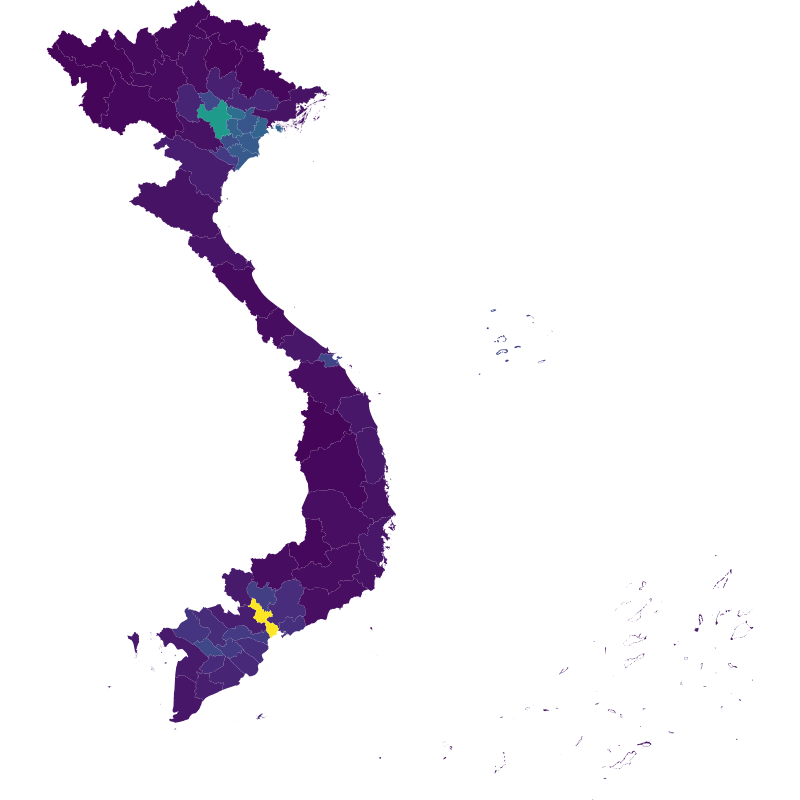
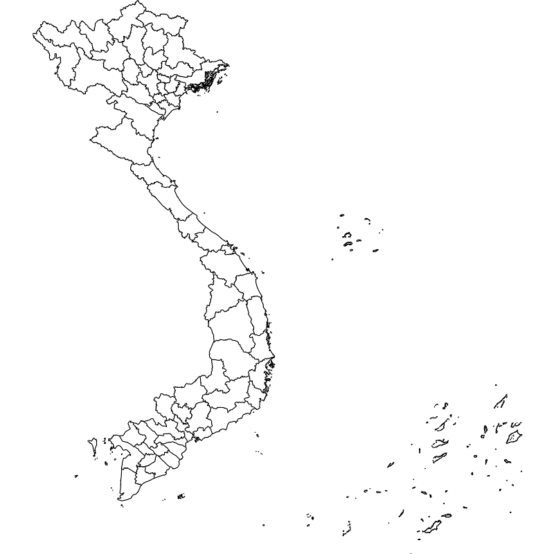
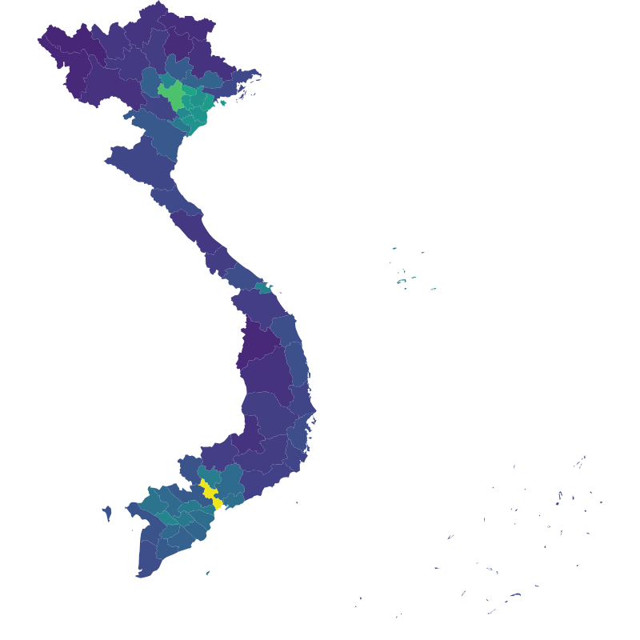
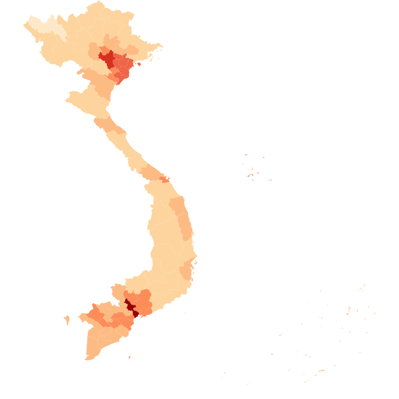
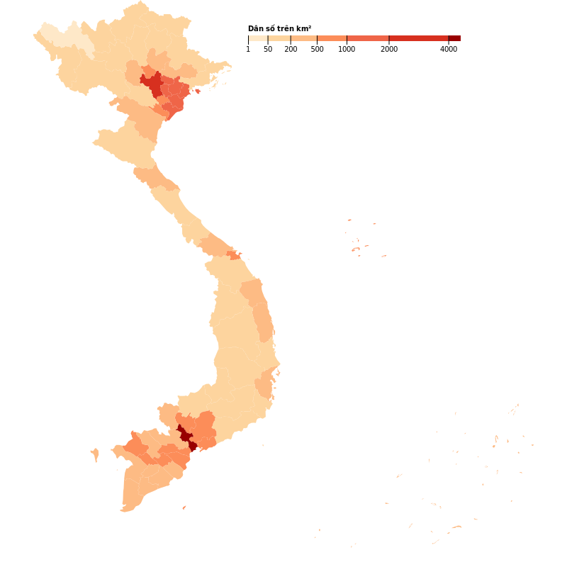

Bản đồ mật độ dân số Việt Nam

Ghi chú lại quá trình tạo ra một choropleth map của mật độ dân số Việt Nam từ hướng dẫn Command-Line Cartography của Mike Bostock. Ghi chú này vốn là một Jupyter notebook.
Choropleth map là một dạng bản đồ chuyên đề (thematic map) trong đó các khu vực được tô màu hay đánh dấu tương ứng với một giá trị nào đó, ví dụ như là mật độ dân số. Trong bản đồ ở trên, mật độ dân số từ thấp tới cao được thể hiện bằng màu sắc từ nhạt tới đậm. Choropleth map là một trong những dạng bản đồ đẹp nhất mà mình biết, đáng tiếc là phần lớn ví dụ hay công cụ tạo ra nó đều chủ yếu xoay quanh bản đồ các bang hay các quận của Mỹ. Vậy nên đây là một chút cố gắng để việc tạo ra choropleth map với bản đồ Việt Nam dễ dàng hơn.
Phần 1 - Bản đồ
Phần một tập trung vào việc tìm dữ liệu địa giới, bao gồm toạ độ và hình dạng các đường biên, của các tỉnh thành Việt Nam và chuyển nó sang dạng dữ liệu phù hợp để hiển thị trên web.
Trong hướng dẫn gốc, Mike sử dụng dữ liệu mà chính phủ Mỹ cung cấp về địa giới bản đồ các bang và quận của Mỹ. Mình không thể tìm thấy dữ liệu tương tự từ nguồn chính thống nào của chính phủ Việt Nam hay các cơ quan nhà nước khác. Một nguồn thay thế phổ biến khác là từ project GADM, mục tiêu của project này là cung cấp bản đồ và dữ liệu địa lý cho tất cả các nước và địa phương thuộc các nước đó, bao gồm cả Việt Nam.
Bản đồ của Việt Nam từ GADM:

Bản đồ này, đáng tiếc, không có quần đảo Hoàng Sa và Trường Sa. Chúng ta có thể làm tốt hơn.
Dự án Open Development Việt Nam đã tập hợp và công bố miễn phí dữ liệu bản đồ các tỉnh của Việt Nam từ công bố của bộ tài nguyên môi trường. Bản đồ này được cung cấp sẵn dưới dạng GeoJSON và có đủ cả hai quần đảo này:

Open Development Việt Nam là sàn dữ liệu và kiến thức tổng hợp nhằm chia sẻ thông tin và tăng cường nhận thức cộng đồng, tạo điều kiện cho các phân tích cá nhân, các cuộc thảo luận nghiêm túc và cải thiện đối thoại mang tính xây dựng về xu hướng phát triển ở Việt Nam trên các lĩnh vực kinh tế, xã hội và môi trường.
Tuyệt vời!
Việc tiếp theo chỉ là tải về file GeoJSON đã có sẵn, geo-project, và render thành SVG tương tự như hướng dẫn.
Trước hết, cài đặt các tools cần thiết từ gói d3-geo-projection.
npm install -gs d3-geo-projection[K[?25h/usr/local/bin/geo2svg -> /usr/local/lib/node_modules/d3-geo-projection/bin/geo2svging[0m [35maction:fi[0m[Km[K
/usr/local/bin/geograticule -> /usr/local/lib/node_modules/d3-geo-projection/bin/geograticule
/usr/local/bin/geoproject -> /usr/local/lib/node_modules/d3-geo-projection/bin/geoproject
/usr/local/bin/geostitch -> /usr/local/lib/node_modules/d3-geo-projection/bin/geostitch
[K[?25h+ d3-geo-projection@2.4.1░░░░░[0m⸩ ⠼ install:d3-geo-projection: [7msill[0m [35mdoSerial[0m install 32[0m[K
added 4 packages from 4 contributors in 2.874s
curl -so vn.json 'https://data.opendevelopmentmekong.net/dataset/999c96d8-fae0-4b82-9a2b-e481f6f50e12/resource/234169fb-ae73-4f23-bbd4-ff20a4fca401/download/diaphantinh.geojson'
geoproject 'd3.geoCylindricalStereographic().fitSize([800, 800], d)' < vn.json > vn-projected.json
geo2svg -w 800 -h 800 < vn-projected.json > vn.svgBước geoproject cần thiết để giảm thời gian render của GeoJSON file, đây là việc chuyển đổi (ánh xạ / project) từ kinh độ và vĩ độ vốn là toạ độ của trái đất trong không gian ba chiều (3D) ra toạ độ của pixel (2D) trên màn hình. CylindricalStereographic được chọn để có một bản đồ Việt Nam mà chúng ta thường thấy. Kích thước của bản đồ được chọn là 800x800 pixels để nó có thể hiện vừa trọn trong browser trên laptop của mình. Kết quả là một bản đồ trọn vẹn như đã thấy ở trên.
Cảm ơn Open Development Việt Nam.
Phần 2 - Dữ liệu
Phần 2 tập trung vào việc thu thập và xữ lý dữ liệu, đồng thời kết hợp dữ liệu địa giới của phần trước với dữ liệu mới.
Hãy xem chúng ta có gì trong file GeoJSON của mình:
jq . vn-projected.json | head -n 20{
"type": "FeatureCollection",
"features": [
{
"type": "Feature",
"properties": {
"gid": 1,
"code": "AD01",
"ten_tinh": "An Giang"
},
"geometry": {
"type": "Polygon",
"coordinates": [
[
[
188.60218942127176,
607.7949296298643
],
[
188.57295149920265,
Error: writing output failed: Broken pipe
import json
with open('vn-projected.json') as f:
geo = json.load(f)
geo.keys()dict_keys(['type', 'features'])
Nhìn từ đây có thể thấy GeoJSON đơn giản là 1 JSON object lớn với 1 array của các Feature, mỗi feature tương ứng với 1 tỉnh thành. Chúng ta có thể gán 1 tập các thuộc tính cho mỗi feature, gọi là properties, cũng như geometry data của nó dưới dạng 1 polygon.
{
"type": "FeatureCollection",
"features": [
{
"type": "Feature",
"properties": { anything ... },
"geometry": { polygon def ... }
},
...
]
}
Đến bước này chỉ có duy nhất tên các tỉnh thành (cùng với một số thuộc tính id, code, không rõ ràng) và toạ độ địa lý của chúng trong dữ liệu của mình.
Tiếp theo cần tìm dữ liệu dân số các tỉnh của Việt Nam. Lần này đáng mừng là chúng ta có thể tìm được dữ liệu này từ nguồn chính thống của chỉnh phủ trên website của Tổng cục thống kê. Tuy nhiên nguồn dữ liệu này chỉ là một trang web chứ không phải là một API đẹp đẽ vì thế phải tốn một vài lần nhấp chuột để có tải về file CSV chứa mật độ dân số theo địa phương.
import csv
density = {}
with open('mat-do-dan-so.csv') as f:
reader = csv.reader(f)
for row in reader:
# check to skip the header row
if row[0] != ' ':
density[row[0]] = float(row[1])
density{'CẢ NƯỚC': 280.0,
'Đồng bằng sông Hồng': 994.0,
'Hà Nội': 2182.0,
'Vĩnh Phúc': 863.0,
'Bắc Ninh': 1432.0,
'Quảng Ninh': 198.0,
'Hải Dương': 1070.0,
'Hải Phòng': 1268.0,
'Hưng Yên': 1258.0,
'Thái Bình': 1128.0,
'Hà Nam': 932.0,
'Nam Định': 1110.0,
'Ninh Bình': 687.0,
'Trung du và miền núi phía Bắc': 126.0,
'Hà Giang': 103.0,
'Cao Bằng': 79.0,
'Bắc Kạn': 66.0,
'Tuyên Quang': 131.0,
'Lào Cai': 108.0,
'Yên Bái': 116.0,
'Thái Nguyên': 348.0,
'Lạng Sơn': 92.0,
'Bắc Giang': 426.0,
'Phú Thọ': 391.0,
'Điện Biên': 58.0,
'Lai Châu': 48.0,
'Sơn La': 86.0,
'Hoà Bình': 181.0,
'Bắc Trung Bộ và Duyên hải miền Trung': 207.0,
'Thanh Hoá': 317.0,
'Nghệ An': 188.0,
'Hà Tĩnh': 211.0,
'Quảng Bình': 110.0,
'Quảng Trị': 135.0,
'Thừa Thiên Huế': 235.0,
'Đà Nẵng': 814.0,
'Quảng Nam': 141.0,
'Quảng Ngãi': 243.0,
'Bình Định': 251.0,
'Phú Yên': 179.0,
'Khánh Hoà': 236.0,
'Ninh Thuận': 179.0,
'Bình Thuận': 154.0,
'Tây Nguyên': 104.0,
'Kon Tum': 52.0,
'Gia Lai': 91.0,
'Đắk Lắk': 144.0,
'Đắk Nông': 93.0,
'Lâm Đồng': 132.0,
'Đông Nam Bộ': 697.0,
'Bình Phước': 139.0,
'Tây Ninh': 277.0,
'Bình Dương': 741.0,
'Đồng Nai': 505.0,
'Bà Rịa - Vũng Tàu': 551.0,
'TP.Hồ Chí Minh': 4025.0,
'Đồng bằng sông Cửu Long': 433.0,
'Long An': 332.0,
'Tiền Giang': 693.0,
'Bến Tre': 528.0,
'Trà Vinh': 441.0,
'Vĩnh Long': 687.0,
'Đồng Tháp': 499.0,
'An Giang': 611.0,
'Kiên Giang': 280.0,
'Cần Thơ': 874.0,
'Hậu Giang': 476.0,
'Sóc Trăng': 396.0,
'Bạc Liêu': 332.0,
'Cà Mau': 234.0}
Chúng ta cũng cần biết thêm dải giá trị (nhỏ nhất và lớn nhất) của dữ liệu này để dùng về sau.
print('min = {}'.format(min(density.values())))
print('max = {}'.format(max(density.values())))min = 48.0
max = 4025.0
Vấn đề đầu tiên ở đây là chúng ta không có bất kỳ id nào để join dữ liệu, ngoại trừ tên các tỉnh thành. Điều này nhiều khả năng sẽ dẫn đến việc không thống nhất trong dữ liệu của các tỉnh như “Bắc Kạn” hay “Đắk Lắk”. Hãy xem có những tỉnh thành nào có tên ghi khác nhau trong hai bộ dữ liệu:
geo_provinces = set(f['properties']['ten_tinh'] for f in geo['features'])
density_provinces = set(density.keys())
geo_provinces - density_provinces{'Bà Rịa -Vũng Tàu',
'Cần Thơn',
'Hòa Bình',
'Khánh Hòa',
'Kien Giang',
'Quản Bình',
'TP. Hồ Chí Minh',
'Thanh Hóa',
'Đăk Lăk',
'Đăk Nông'}
density_provinces - geo_provinces{'Bà Rịa - Vũng Tàu',
'Bắc Trung Bộ và Duyên hải miền Trung',
'CẢ NƯỚC',
'Cần Thơ',
'Hoà Bình',
'Khánh Hoà',
'Kiên Giang',
'Quảng Bình',
'TP.Hồ Chí Minh',
'Thanh Hoá',
'Trung du và miền núi phía Bắc',
'Tây Nguyên',
'Đông Nam Bộ',
'Đắk Lắk',
'Đắk Nông',
'Đồng bằng sông Cửu Long',
'Đồng bằng sông Hồng'}
Đúng như dự đoán, lỗi chính tả và sự không thống nhất là đặc trưng của tiếng Việt. Mặc dù vậy có thể thấy rằng dữ liệu từ website của cục thống kê là chuẩn xác hơn. Hãy sửa dữ liệu trong file GeoJSON của chúng ta theo tên chuẩn này, đồng thời thêm dữ liệu mật độ dân số vào các thuộc tính, cũng như bỏ đi những thuộc tính không cần thiết còn lại:
corrections = {
'Bà Rịa -Vũng Tàu': 'Bà Rịa - Vũng Tàu',
'Cần Thơn': 'Cần Thơ',
'Hòa Bình': 'Hoà Bình',
'Khánh Hòa': 'Khánh Hoà',
'Kien Giang': 'Kiên Giang',
'Quản Bình': 'Quảng Bình',
'TP. Hồ Chí Minh': 'TP.Hồ Chí Minh',
'Thanh Hóa': 'Thanh Hoá',
'Đăk Lăk': 'Đắk Lắk',
'Đăk Nông': 'Đắk Nông'
}
for feature in geo['features']:
name = feature['properties']['ten_tinh']
if name in corrections:
# correct province's name if needed
feature['properties']['ten_tinh'] = corrections[name]
name = corrections[name]
# add density property and remove unused others
feature['properties']['density'] = density[name]
del feature['properties']['gid']
del feature['properties']['code']
# and let's see if we still seeing any differences
geo_provinces = set(f['properties']['ten_tinh'] for f in geo['features'])
geo_provinces - density_provincesset()
Empty set nghĩa là hai bộ tên tỉnh thành đã giống nhau, hãy lưu lại dữ liệu này vào một file mới.
with open('vn-density.json', 'w') as f:
json.dump(geo, f)Phần tiếp theo chỉ đơn giản là sao chép và chạy những lệnh từ bài hướng dẫn của Mike Bostock. Trước hết là split file GeoJSON đang có thành file ndjson (Newline Delimited JSON).
ndjson-split 'd.features' < vn-density.json > vn-density.ndjsonMike Bostock dành phần lớn thời gian trong phần 2 của mình để giới thiệu về NDJSON. NDJSON đơn giản là file gồm nhiều JSON objects phân tách bằng dấu xuống hàng, có nghĩa là mỗi object nằm trên một hàng. Điều này giúp cho việc xử lý trên dòng lệnh (command line) đơn giản hơn, chủ yếu vì phần lớn các công cụ và mọi người đều đã quen với cách tư duy xử lý theo từng dòng (line oriented). Còn ở đây mình chủ yếu xài python code để xử lý dữ liệu vì chủ yếu (1) đã và đang viết note này trong một Jupyter notebook và (2) lười phải học thêm một loạt lệnh mới để xử lý NDJSON như trong bài gốc.
Tiếp theo đơn giản là install d3 và tạo mapping tương ứng từ mật độ dân số, density, tới màu tô trên bản đồ, fill. Domain được chọn là [0, 4000] vì giá trị lớn nhất của mật độ dân số là 4025 như đã thấy ở trên.
npm install -gs d3[K[?25h+ d3@5.7.027m[90m░░░░░░[0m⸩ ⠙ build:iconv-lite: [7msill[0m [35mlinkStuff[0m iconv-lite@0.4.24 is in[0m[Km[K
added 36 packages from 4 contributors in 8.243s
ndjson-map -r d3 \
'(d.properties.fill = d3.scaleSequential(d3.interpolateViridis).domain([0, 4000])(d.properties.density), d)' \
< vn-density.ndjson \
> vn-color.ndjsonCuối cùng là render ảnh SVG từ file NDJSON bằng geo2svg.
geo2svg -n --stroke none -p 1 -w 800 -h 800 < vn-color.ndjson > vn-color.svg
Ta da! 🎉
Ít nhất là bây giờ chúng ta đã có một cái gì đó nhìn được, giờ hãy làm cho nó tốt hơn.
Phần 3 - Tối ưu dữ liệu
Phần 3 tập trung vào việc tối ưu kích thước lưu trữ (và tất nhiên, truyền tải) của dữ liệu bằng cách chuyển sang TopoJSON.
Hãy xem lại kích thước của file GeoJSON mà chúng ta tạo ra từ phần trước.
ls -lh vn-density.json-rw-r--r-- 1 binhle staff 3.9M Oct 9 18:29 vn-density.json
3.9 MB không quá lớn nhưng cũng đủ nặng để cụ già ở nông thôn từ bỏ ý định xem bản đồ của chúng ta khi lướt web trên 3G mức 1 vạch. Đáng mừng có nhiều cách để giảm kích thước file:
- Simplify - ví dụ chúng ta có thể đơn giản hoá bản đồ bằng cách bỏ bớt điểm trên đường kẻ
- Quantize - hoặc chúng ta có thể giảm độ chính xác của số liệu bằng cách bỏ bớt chữ số sau dấu thập phân, vd 224.3021507494117 thành 224.3
- Compress - hoặc bỏ các thành phần trùng lặp và nén nó lại
Tuy nhiên cách tốt nhất để giảm dung lượng file GeoJSON là chuyển nó sang dạng TopoJSON. TopoJSON có được kích thước tối ưu hơn GeoJSON nhờ
- Thể hiện lines và polygon bằng danh sách các đường cong (arcs) thay vì danh sách các toạ độ (coordinates). Điều này đặc biệt hiệu quả với bản đồ có nhiều đường biên giới giao nhau, vốn là các đường cong giống nhau và nhờ vậy không cần lặp lại như trong trường hợp toạ độ.
- Toạ độ trong TopoJSON có thể được quantized, có nghĩa là thể hiện dưới dạng đơn giản hơn (integer thay vì float) và delta-encoded để giảm dung lượng.
Điều quan trọng nhất là bạn có thể bỏ qua những chuyện đó (như mình) và sử dụng công cụ có sẵn để chuyển đổi từ file GeoJSON sang file TopoJSON.
npm install -gs topojson[K[?25h/usr/local/bin/toposimplify -> /usr/local/lib/node_modules/topojson/node_modules/topojson-simplify/bin/toposimplifyK
/usr/local/bin/topo2geo -> /usr/local/lib/node_modules/topojson/node_modules/topojson-client/bin/topo2geo
/usr/local/bin/topomerge -> /usr/local/lib/node_modules/topojson/node_modules/topojson-client/bin/topomerge
/usr/local/bin/topoquantize -> /usr/local/lib/node_modules/topojson/node_modules/topojson-client/bin/topoquantize
/usr/local/bin/geo2topo -> /usr/local/lib/node_modules/topojson/node_modules/topojson-server/bin/geo2topo
[K[?25h+ topojson@3.0.227m[90m░░░░░░[0m⸩ ⠏ install:topojson: [7msill[0m [35mdoSerial[0m install 40[0m[K
added 5 packages from 2 contributors in 3.511s
Một lệnh đơn giản để chuyển file GeoJSON thành TopoJSON.
geo2topo -n tracts=vn-density.ndjson > vn-tracts-topo.jsonTiếp theo là simplify, tương tự như hướng dẫn gốc.
toposimplify -p 1 -f < vn-tracts-topo.json > vn-simple-topo.jsonVà cuối cùng là quantize.
topoquantize 1e5 < vn-simple-topo.json > vn-quantized-topo.jsonls -lh *-topo.json-rw-r--r-- 1 binhle staff 40K Oct 9 18:30 vn-quantized-topo.json
-rw-r--r-- 1 binhle staff 119K Oct 9 18:30 vn-simple-topo.json
-rw-r--r-- 1 binhle staff 2.8M Oct 9 18:30 vn-tracts-topo.json
Kết quả: kích thước file giảm đến gần 100 lần qua các bước trên, từ gần 4MB chỉ còn lại 40KB. Điều này cộng thêm nén bằng gzip khi transfer, một trong những kỹ thuật tối ưu phổ biến, có thể đem lại kích cỡ tối ưu (~15KB) để hiển thị trên web. Nhưng đổi lại những cách thức này có làm giảm độ chính xác trong bản đồ hay không? Hãy so sánh bản đồ trước và sau khi tối ưu bằng cách tạo ra một ảnh động từ 2 hình.
topo2geo tracts=- < vn-quantized-topo.json | \
geo2svg -w 800 -h 800 > vn-quantized-topo.svg
convert -delay 100 -loop 0 vn.svg vn-quantized-topo.svg vn-quantized-topo.gif
Lưu ý là các bước trên như simplify hay quantize có thể làm mất thông tin gốc tuy nhiên có thể chấp nhận được nếu sử dụng hợp lý. Ví dụ ở đây có thể thấy biên giới các tỉnh gần như không có gì thay đổi khi nhìn bằng mắt thường. Điểm khác biệt lớn nhất là sự biến mất của các đảo nhỏ tập trung ở khu vực Hạ Long, bờ biển miền Trung, Phú Quốc, và quần đảo Trường Sa. Tuy nhiên các đảo chính và hình dáng quần đảo vẫn được bảo tồn, như mục tiêu của chúng ta.
Bản đồ này không phải là bản đồ địa giới chính thống nước Việt Nam, nó chỉ là công cụ có tính chất minh hoạ số liệu.
Phần 4 - Hoàn thiện
Phần 4 tập trung vào việc hoàn thiện bản đồ với màu sắc thể hiện tốt hơn dữ liệu này cũng như một vài yếu tố thẩm mỹ khác.
Không có nhiều sự thay đổi hay chỉnh sửa lớn nào cần thiết so với hướng dẫn gốc trong phần này. Phần lớn công việc bây giờ chỉ là copy & paste.
Bắt đầu bằng sequential mapping của dữ liệu tương tự như trong phần 2.
topo2geo tracts=- \
< vn-quantized-topo.json \
| ndjson-map -r d3 'z = d3.scaleSequential(d3.interpolateViridis).domain([0, 4000]), d.features.forEach(f => f.properties.fill = z(f.properties.density)), d' \
| ndjson-split 'd.features' \
| geo2svg -n --stroke none -p 1 -w 800 -h 800 \
> vn-topo-color.svgBởi vì mật đồ dân số lớn hơn hẳn các nơi của TP. Hồ Chí Minh hay Hà Nội, các tỉnh thành khác gần như có màu gần nhau và khó phân biệt với dải màu tuần tự (linear). Tác giả đề nghị sử dụng exponential scale, cụ thể là thang căn bậc 2, để giúp giảm sự phân biệt giữa thấp và cao này. Nhờ đó làm sáng hơn các vùng tối màu và giúp phân biệt chúng rõ hơn.
topo2geo tracts=- \
< vn-quantized-topo.json \
| ndjson-map -r d3 'z = d3.scaleSequential(d3.interpolateViridis).domain([0, 65]), d.features.forEach(f => f.properties.fill = z(Math.sqrt(f.properties.density))), d' \
| ndjson-split 'd.features' \
| geo2svg -n --stroke none -p 1 -w 800 -h 800 \
> vn-topo-sqrt.svg
Cuối cùng là gợi ý sử dụng các ngưỡng giá trị cụ thể (thresholds) cộng với một thang màu rời rạc thay vì các giá trị liên tục, sử dụng d3-scale-chromatic.
npm install -gs d3-scale-chromatic[K[?25h+ d3-scale-chromatic@1.3.30m⸩ ⠏ refresh-package-json:d3-scale-chromatic: [32;40mtiming[0m [35maction:f[0m[Km[K
added 3 packages from 1 contributor in 1.445s
topo2geo tracts=- \
< vn-quantized-topo.json \
| ndjson-map -r d3 -r d3=d3-scale-chromatic 'z = d3.scaleThreshold().domain([1, 50, 200, 500, 1000, 2000, 4000]).range(d3.schemeOrRd[8]), d.features.forEach(f => f.properties.fill = z(f.properties.density)), d' \
| ndjson-split 'd.features' \
| geo2svg -n --stroke none -p 1 -w 800 -h 800 \
> vn-topo-threshold.svg
Thang màu sử dụng ở đây, d3.schemeOrRd[8], là OrDr với 8 màu.
Bước cuối cùng là thêm chú giải cho các màu được sử dụng. Đáng tiếc là chú giải này được tạo ra bằng một cách không được dễ dàng cho lắm, bằng D3 trong browser và copy output SVG vào file bản đồ.
%%bash
# bash is needed for <() construct used below
export KEY_GIST_URL='https://gist.githubusercontent.com/lebinh/65a3743f07bbefd8fb507b589541d39b/raw/d77dcecda3ae59f020c2ac0351216aacbb26eb56/key.svg'
sed 's#</svg>##' < vn-topo-threshold.svg | \
cat - <(curl -s $KEY_GIST_URL) <(echo '</svg>') \
> vn-population-density.svg
Note này đến đây là hết nhưng đây chưa phải là kết quả cuối cùng. Vẫn còn quá nhiều bước và thao tác chỉ để có một bản đồ đơn giản này. Chúng ta có thể làm tốt hơn.
Nhưng cái đó hãy để lần tới 😅